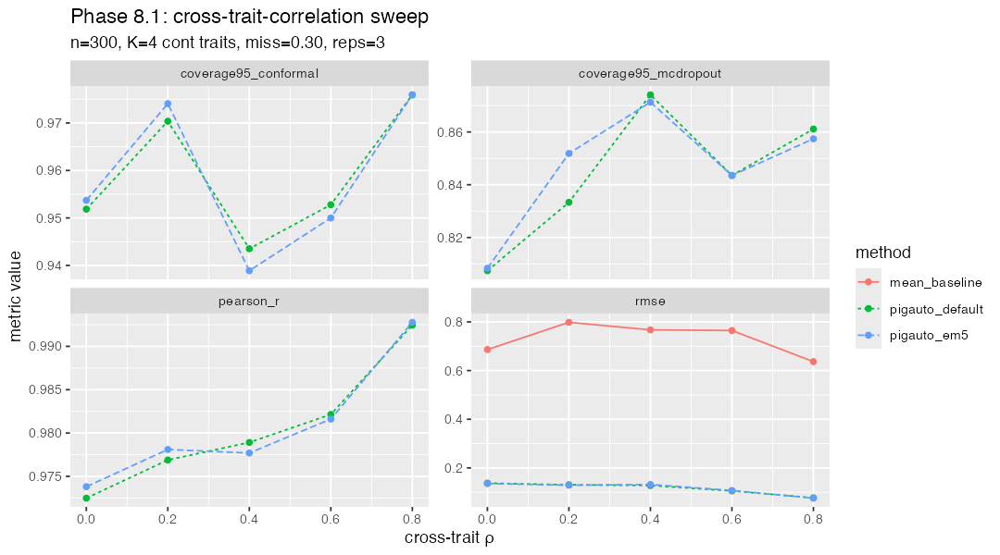

Config: n = 300, K = 4 continuous traits, 3 reps × 5 ρ levels × 3 methods.
Total wall: 28.9 min.

| method | ρ | metric | mean value |
|---|---|---|---|
| pigauto_default | 0.0 | pearson_r | 0.974 |
| pigauto_em5 | 0.0 | pearson_r | 0.974 |
| pigauto_default | 0.2 | pearson_r | 0.979 |
| pigauto_em5 | 0.2 | pearson_r | 0.978 |
| pigauto_default | 0.4 | pearson_r | 0.979 |
| pigauto_em5 | 0.4 | pearson_r | 0.979 |
| pigauto_default | 0.6 | pearson_r | 0.983 |
| pigauto_em5 | 0.6 | pearson_r | 0.983 |
| pigauto_default | 0.8 | pearson_r | 0.993 |
| pigauto_em5 | 0.8 | pearson_r | 0.993 |
| mean_baseline | 0.0 | rmse | 0.686 |
| pigauto_default | 0.0 | rmse | 0.136 |
| pigauto_em5 | 0.0 | rmse | 0.135 |
| mean_baseline | 0.2 | rmse | 0.798 |
| pigauto_default | 0.2 | rmse | 0.126 |
| pigauto_em5 | 0.2 | rmse | 0.126 |
| mean_baseline | 0.4 | rmse | 0.767 |
| pigauto_default | 0.4 | rmse | 0.127 |
| pigauto_em5 | 0.4 | rmse | 0.128 |
| mean_baseline | 0.6 | rmse | 0.765 |
| pigauto_default | 0.6 | rmse | 0.103 |
| pigauto_em5 | 0.6 | rmse | 0.103 |
| mean_baseline | 0.8 | rmse | 0.637 |
| pigauto_default | 0.8 | rmse | 0.075 |
| pigauto_em5 | 0.8 | rmse | 0.075 |